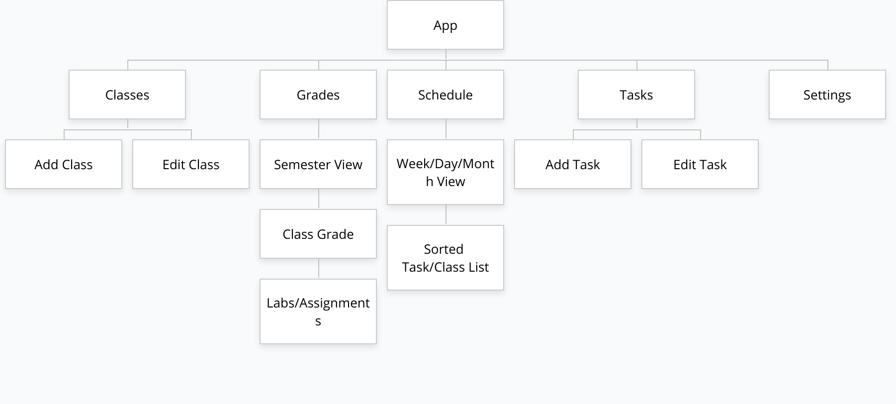
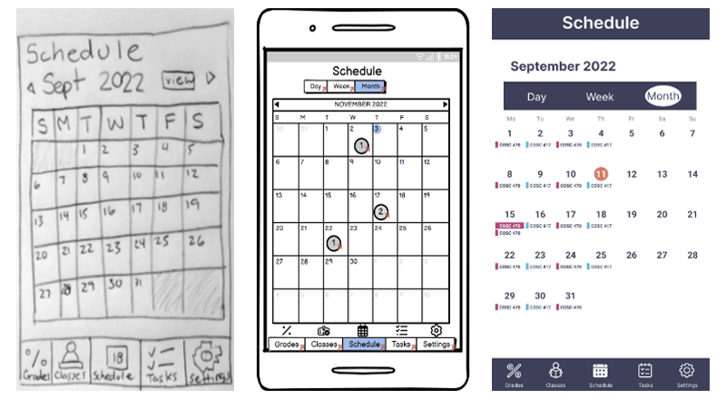
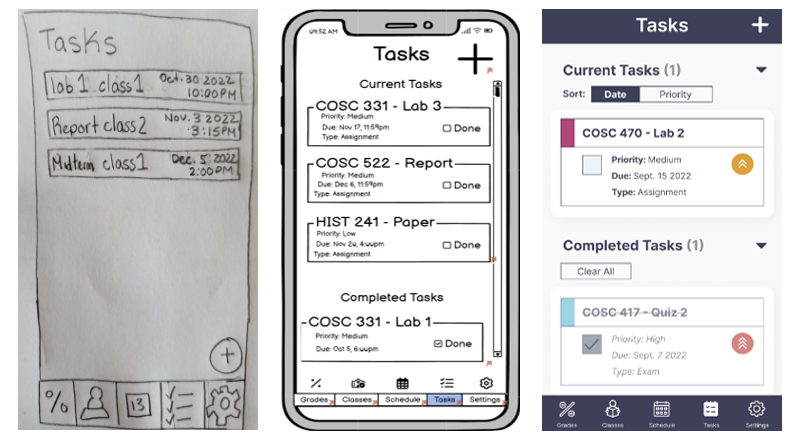
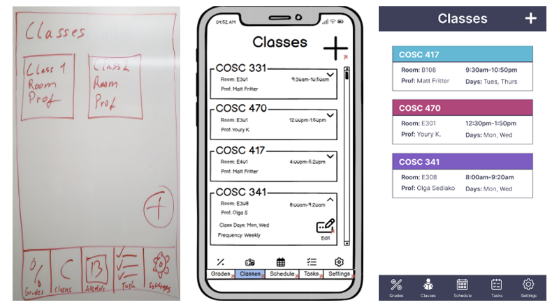
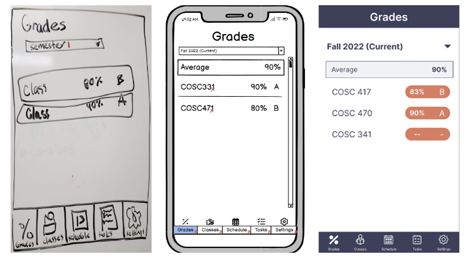

My team and I designed the 'Student Tracker' mobile application as the final deliverable for the Okanagan College's
'COSC 341 - User Experience' course. This project served as a way to learn the phases of UX design development, from
gathering requirements to creating high-fidelity prototypes.
PROBLEM
Scheduling has been a key aspect of everyday life for centuries. It is especially important as a student to
keep track of what needs to be done for each day. A lot of people are still using paper schedulers or
programs for note taking to keep track of homework and grades. Because many students use many
ineffective, or easy-to-forget methods of prioritizing work and assignments, there is clearly a demand
for such an effective product and is therefore feasible.
GOAL
The goal of the application is to provide students with a tool to help organize their school work into
tasks to make their school life easier to manage and help students excel in their education.
It will accomplish this by providing a consolidated interface to:
View assignments and tasks and prioritize work
Give students control over scheduling assignments and exams
Input and view their current grades
USERS
USER PERSONAS
PROCESS
REASEARCH
For user research we conducted a survey and guerilla user testing to find out what features students
valued in a scheduling application. We used the competing scheduling application 'Power Planner' to conduct
usability testing of an existing system.
Through our Guerilla testing we found that some users found the
interface of 'Power Planner' intuitive and easy, however due to the application having many ways to accomplish
each task, it sometimes confused users. This is because sometimes if they happen to find the easy method it's
very intuitive, but if they miss it there's a longer more indirect way to create tasks for classes. There was
also too much granularity in the date-time picker for setting class schedules and other time settings resulting
in unnecessary scrolling.
PLANNING CONTENT
Once we had an idea of what features should be included in the application, we began to design the navigation
structure. The site map below reflects what the main navigation pages in the application would be.

Student Tracker Sitemap
SKETCHES AND MOCKUPS
With the site map in mind the rapid sketches were created. During the creation of sketches, new
ideas and concepts came up and were included in the wireframes. Once the wireframes were completed the designs were
translated into a high-fidelity prototype using Figma

Evolution of 'Schedule' Page

Evolution of 'Tasks' Page

Evolution of 'Classes' Page

Evolution of 'Grades' Page
PROTOTYPE
LEARNINGS
WHAT WE LEARNED
Theres a delicate balance between keeping a system functional yet simple
Its easy for something to be intuitive when you're the designer, but the user may find it otherwise